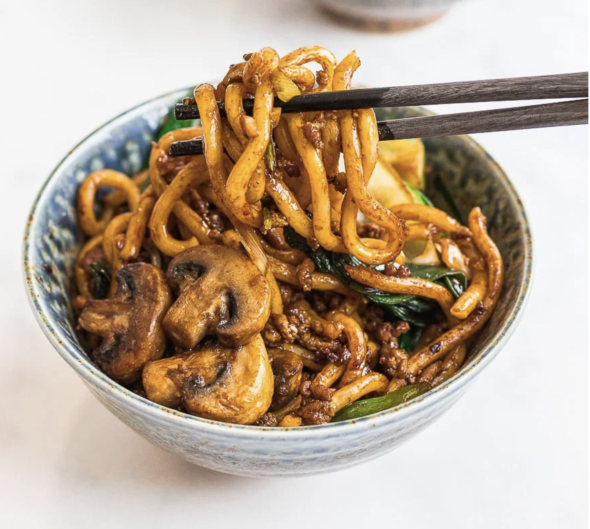

Udon Recipe
Short Introduction
Yaki udon noodles is one of my favorite weeknight meals to make because it’s so fast and easy to make! The yaki udon noodle sauce is only 5 ingredients, and the udon noodles are ready to stir fry in under 5 minutes. Throw in any vegetables and protein you’d like because these stir fried udon noodles are super versatile and taste good with just about anything. Also they’re ready in 20 minutes, start to finish!
For this recipe, I used ground chicken for chicken yaki udon but you can also use ground beef or pork. Seafood would work as well.
What is Udon made of?
Udon noodles are a thick, chewy wheat noodles made with wheat flour, water, and salt. However, it’s not gluten free like the rice noodles you see in many stir fries. Udon noodles are vegan and dairy free, but always check the ingredients as there can be different additives that vary per brand.
The ingredients needed for Yaki Udon
- Onion
- garlic
- Some green vegetable of your choice
- Optional: Chicken, beef, pork or shrimp; you won't need it if you are happy with a vegeterian option
- Udon; you can purchase it from the platform Joybuy online
Steps of making Udon
- Remove your udon noodles from its package and add it to a pot of boiling water. Frozen udon noodles can be added directly to the pot of boiling water. Stir gently until your udon noodles are separated and pliable. This should take 1 – 2 minutes. They come precooked so avoid overcooking them as they can get too soft.
- Rinse and drain your noodles under cold water. If not using right away, drizzle on a little bit of oil to keep them from sticking.
- Heat your pan over high heat and add the oil. Add in the ground meat and stir fry until almost cooked. Add the vegetables and stir fry until meat is fully cooked and vegetables are soft. Next add in the noodles, sauce, and scallions. Add less sauce if you prefer. Continue stir frying for about 3 minutes or until well combined. Serve immediately.
Click here to go back home
